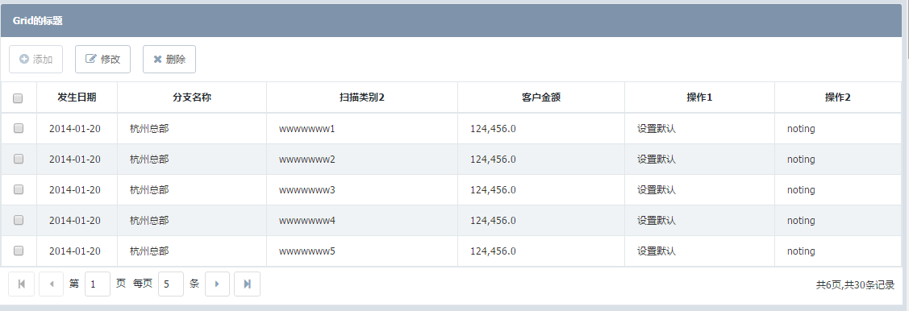

- Horn
- Horn._Pagebar-pagebar
- Horn.Base
- Horn.ButtonPanel
- Horn.Calendar
- Horn.CalendarGroup
- Horn.Checkbox
- Horn.CheckboxGroup
- Horn.Combox
- Horn.DataGrid
- Horn.Field
- Horn.FieldSet
- Horn.Form
- Horn.Grid
- Horn.HiddenField
- Horn.Label
- Horn.Menu
- Horn.MessageBox
- Horn.PageBar
- Horn.Panel
- Horn.Password
- Horn.PasswordGroup
- Horn.QueryTable
- Horn.RadioGroup
- Horn.Screen
- Horn.SelectTree
- Horn.TabPanel
- Horn.TargetSelect
- Horn.Textarea
- Horn.Textfield
- Horn.Tip
- Horn.TypeField
- Horn.Util
- Horn.Validate
- Horn.Window
- Horn.ZtreePanel
Grid 数据列表
以多行多列的形式展示数据，支持行数据选中、列的格式转换
依赖组件
- 无
适用范围
约束
- 目前仅支持后台数据展示，不支持前台数据加载
- 该组件本身不支持分页，需要与#page_bar组件配合使用
注意事项
- 无
使用示例
示例1:
属性
注意：组件的id、name属性只能是英文字母开始，由英文字母、数字和下划线组成，命名时应考虑易识别，不要太长，不要和其他组件重复（表单内的组件除外）。
| 名称 | 类型 | 描述 | 默认值 | ||||||||||||||||||||||||||||||||||||||||||||||||||||
|---|---|---|---|---|---|---|---|---|---|---|---|---|---|---|---|---|---|---|---|---|---|---|---|---|---|---|---|---|---|---|---|---|---|---|---|---|---|---|---|---|---|---|---|---|---|---|---|---|---|---|---|---|---|---|---|
| id | String |
Grid的唯一标识。 示例：无 |
"" | ||||||||||||||||||||||||||||||||||||||||||||||||||||
| name | String |
Grid的名称。 示例：无 |
"" | ||||||||||||||||||||||||||||||||||||||||||||||||||||
| data | Json |
Grid的数据。 示例：示例：
[{"branchNo":8888,"initDate":"20130101"},
{"branchNo":8888,"initDate":"20130101"},
{"branchNo":8888,"initDate":"20130101"},
{"branchNo":8888,"initDate":"20130101"},
{"branchNo":8888,"initDate":"20130101"},
{"branchNo":8888,"initDate":"20130101"},
{"branchNo":8888,"initDate":"20130101"}]
|
null | ||||||||||||||||||||||||||||||||||||||||||||||||||||
| items | Array |
Grid列表条目。 示例：items中的单个列表条目属性：
|
null | ||||||||||||||||||||||||||||||||||||||||||||||||||||
| titleButtons | Array |
Grid标题栏上的按钮组,当按钮的"event"属性不设置或者设置的方法在当前上下文中不存在时，按钮将被隐藏 默认提供添加、修改、删除、确认、查询、打开、保存、刷新的样式,cls属性分别对应："add","edit","del","confirm","query","open","save","refresh" 示例：单个按钮属性：
label {String} 按钮文本
cls {String} 按钮css样式
event {String} 按钮点击事件
disabled {Boolean} 是否禁用/启用按钮
refmenu {string} 按钮中关联menu组件
示例：
"titleButtons" : [{"label":"添加","cls":"add","event":"add()"}]
|
null | ||||||||||||||||||||||||||||||||||||||||||||||||||||
| events | Json |
Grid上的事件属性
控件支持的事件列表如下： "events" :[
{"event" : "rowclick" , "function" : "testgridrowclick"},
{"event" : "rowdblclick", "function" : "testgridrowdbclick"}
]
|
null | ||||||||||||||||||||||||||||||||||||||||||||||||||||
| numbercolumn | Boolean |
Grid是否配置序号列，默认值为false，启用序号列,设置为true时才显示序列号 示例：无 |
false | ||||||||||||||||||||||||||||||||||||||||||||||||||||
| selectModel | String |
Grid启用单选/多选选择框 ，默认值为single,(注意，多选框 muti的拼音错了，做了兼容处理，输入multi也可以) ,单选框值为:single 当不配置selectModel或selectModel为""属性时,不显示选择列 示例：无 |
|||||||||||||||||||||||||||||||||||||||||||||||||||||
| rowSelect | Boolean |
Grid是否启用点击行选中行操作,默认值为false，不启用,设置为true时点击行选中才生效 示例：无 |
false |
事件
| 名称 | 参数 | 描述 |
|---|---|---|
| rowclick | function(data) |
单击行时触发 |
| rowdblclick | function(data) |
双击行时触发 |
方法
| 名称 | 参数 | 描述 |
|---|---|---|
| setButtonDisabled | (name, disabled) |
启用/禁用 表格里的按钮栏的某个操作按钮 参数:#jscode()
Horn.getComp("gridName").setButtonDisabled("delBtn",true);
#end
|
| setTitle | (title) |
设置标题 参数: |
| selectAll | () |
选择所有行。 |
| unSelectAll | () |
清除所有选择行。 |
| getSelecteds | (format(可选值有true,1,或者不传参数) ) |
获取所有的选择项 参数:1):参数为true：返回整行完整数 如：[{"branchNo":"001","Date":"20140320"}{"branchNo":"001","Date":"20140320"}] 2)：参数为1：返回列数据的字段值，如果是字典列,返回字典的value值 3):无参数： 返回列数据的字段值 如果是字典列,返回label值 #jscode()
var result = Horn.getComp('flowTable1').getSelecteds();
var comValue="";
if(result&&result.length>0){
for(var i=0;i |
Defined in: Grid.js